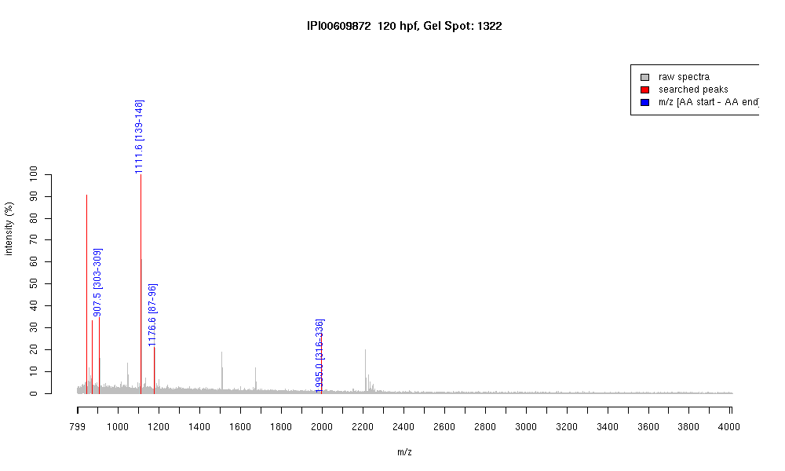

| Name | PREDICTED: similar to muscle-specificcreatine kinase isoform 3 |
|---|---|
| MW | 41454.8 |
| PI | 6.92 |
| Mascot Protein Score | 77 |
| Masses (matched / unmatched) | 4 / 2 |

| Peptide | MZ (calc) | MZ (observed) | Error (DA) | Error (PPM) | Start | Stop | Modifications |
|---|---|---|---|---|---|---|---|
| FEEILTR | 907.4883 | 907.5013 | 0.013 | 14 | 303 | 309 | |
| GYALPPHNSR | 1111.5643 | 1111.5667 | 0.0024 | 2 | 139 | 148 | |
| DLFDPVISDR | 1176.5895 | 1176.574 | -0.0155 | -13 | 87 | 96 | |
| GTGGVDTASVGGVFDISNADR | 1994.9413 | 1994.9517 | 0.0104 | 5 | 316 | 336 |